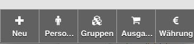
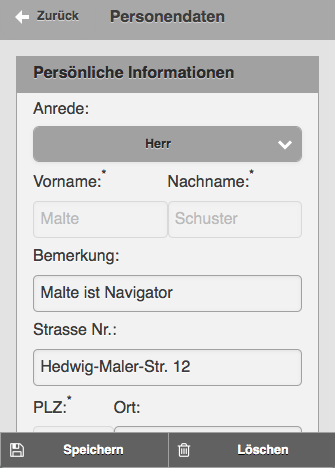

Wir geben Ihnen einen Überblick im Umgang mit viaJournal! Sollten Sie trotzdem weitere Fragen haben, oder uns Ihr Feedback geben wollen, schreiben Sie uns bitte per Email.
Nach dem Start befinden Sie sich im Dashboard. Im Header gibt es 3 Buttons: '?' für Hilfe, 'i' für Impressum und ganz rechts ein Icon für den 'Taschenrechner'. Darunter befinden sich dann in einer 'Auswahl-Übersicht' die entsprechenden Journale oder Kassenbücher. Nach der ersten Installation wird ein Beispieljournal 'Bordkasse...' mitgeliefert. Es soll einen ersten Eindruck über die Möglichkeiten verschaffen.
 Im unteren Teil finden sich 5 weitere Buttons: '+ Neu' legt neue Kassenbücher an, 'Personen, Gruppen und Ausgaben' sind Stamm-Konten auf die gebucht werden können (näheres weiter unten dazu). Mit '€ Währung' können Wechselkurse definiert werden.
Ein Kassenbuch greift immer auf die 'Stamm-Konten' zurück, weshalb diese auch als Erstes angelegt werden müssen. ACHTUNG: Wurden Konten oder Währungsumrechnungen gelöscht, die jedoch in einem Journal vorkommen, kommt es zu FALSCHEN Abrechnungen!
Das Prinzip wie Konten angelegt und gemanaged werden ist für alle Stamm-Konten gleich. Am Beispiel von 'Personen' funktioniert das folgendermaßen. Auch hier zeigt eine Übersicht alle angelegten Personen. Alle Personen die an einem Kassenbuch teilnehmen, müssen hier definiert sein.
 Eine Eingabemaske führt zu den entsprechenden Input-Feldern. Felder die mit einem '*'-Stern gekennzeichnet sind (Indexfelder), müssen ausgefüllt werden und sind nach der Anlage des Datensatzes dann nicht mehr veränderbar (der Name: 'Malte Schuster' ist in der Maske rechts ausgegraut). Zu allen Konten können zusätzliche Bankinformationen hinterlegt werden, die für die abschließende Abrechnung genutzt werden können. Mittels der Buttons 'Speichern, Löschen' in der Fußleiste, kann ein Datensatz angelegt oder gelöscht werden.
viaJournal kann auch Währungen umrechnen. Dazu können verschiedene Wecheselkurse angelegt werden. Entscheident ist, dass von einer Währung zu einer anderen Währung mittels eingetragenem 'Kurs' umgerechnet wird. Die Währung 'von' ist dabei immer die 'Referenzwährung', die im jeweiligen Journal angegeben wurde. Die Währung 'nach' kann von Land zu Land unterschiedlich sein. In dem beigefügten Beispiel ist 'EUR' die Referenzwährung und 'USD, HRK, TRY, DKK' die unterschiedlichen Landes Wechselwährungen. Der Kurs gibt das Verhältnis von Referenzwährung zur Landeswährung an.
Nun sind alle Vorbereitungen getroffen, um in einem Kassenbuch zu arbeiten. Nach Eingabe von 'Journalname' und 'Bemerkung' können über ein Auwahlfeld die entsprechende 'Referenz-Währung', nach der die Abrechnung erfolgen soll, als auch der 'Verwalter', die 'Teilnehmer' und die zu nutzenden 'Konten' die innerhalb des Kassenbuches Anwendung finden eingetragen werden. Ebenfalls muss der 'Zeitraum', für den das Kassenbuch gültig ist, definiert werden.
In der Fußleiste gibt es auch hier 4 weitere Buttons. Innerhalb von 'Buchungen' werden die entscheidenden Aktionen vorgenommen. Wiedererum führt eine Auswahl-Übersicht aller bisherigen Buchungen zur Eingabemaske einer entsprechenden Buchung. Neben der Eingabe eines 'Namen', des 'Datums' und 'Ortes' der Buchung kann jetzt die eigentliche Buchung vorgenommen werden.
Dabei kann immer nur von einem 'Personen- oder Gruppen-Konto' auf 'Sach-, Personen- oder Gruppen-Konto' gebucht werden. Buchhalterisch würde es z.B. heißen: von einem 'Personen Soll-Konto' wird ein Betrag auf ein 'Sach Haben-Konto' gebucht.
Zum Buchungsbetrag kann hier in einem Auswahlfeld die Währung angegeben werden in der bezahlt wird. Es wird allerdings nur die Währung in der Auswahl angezeigt, die im oben genannten Stammkonto schon eingetragen wurde.WICHTIG: Eine Buchung muss immer ausgeglichen sein! Zum Beispiel kann ein 'Bargeld-Gruppenkonto' nicht mehr Soll/Ausgaben als Haben/Einnahmen aufweisen! Was bei viaJournal machbar ist, aber natürlich keinen Sinn macht.
Weiterhin können einzelne Buchungen über die Buttons in der Fußleiste 'gespeichert' und 'gelöscht' werden.
Der Button 'Zurück' im Header führt wieder zum Kassenbuch zurück. Von dort kann über den Button 'Report' eine Abrechnung aller Buchungen für ein Kassenbuch dargestellt werden. Eine Übersicht im oberen Teil zeigt Journaldetails, der Gruppen- und Personenkonten und gibt Aufschluss aller kumulierten Zahlungen und zeigt welchen Personen ggf. zuviel oder zuwenig gezahlt haben.
Weiter unten werden die einzelnen Konten nach 'Ausgaben/Soll' und 'Einnahmen/Haben', sowie nach den 'Sachaufwänden' aufgeführt. Interessant ist hierbei sicherlich für die einzelnen Konten die kumulierten Beträge zu sehen. Abschließend werden im unteren Teil noch alle Einzelbuchungen aufgeführt.
Um diesen Report an alle Teilnehmer des Kassenbuchs ggf. mit einer Zahlungsaufforderung weiterzuleiten besteht die Möglichkeit mittels des Buttons 'Mail' im Header, diese Abrechnung per Email zu versenden.